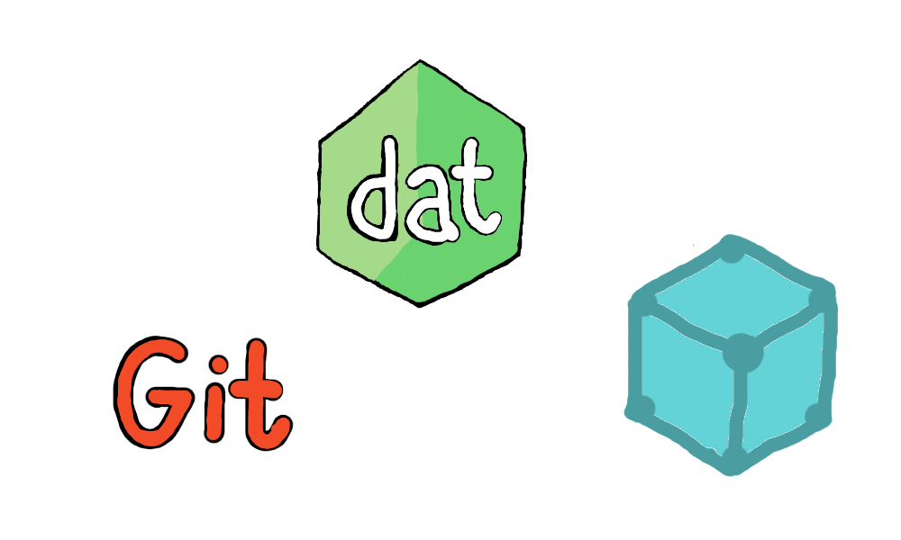
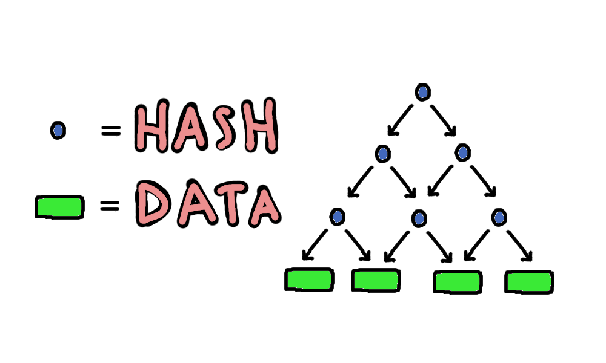
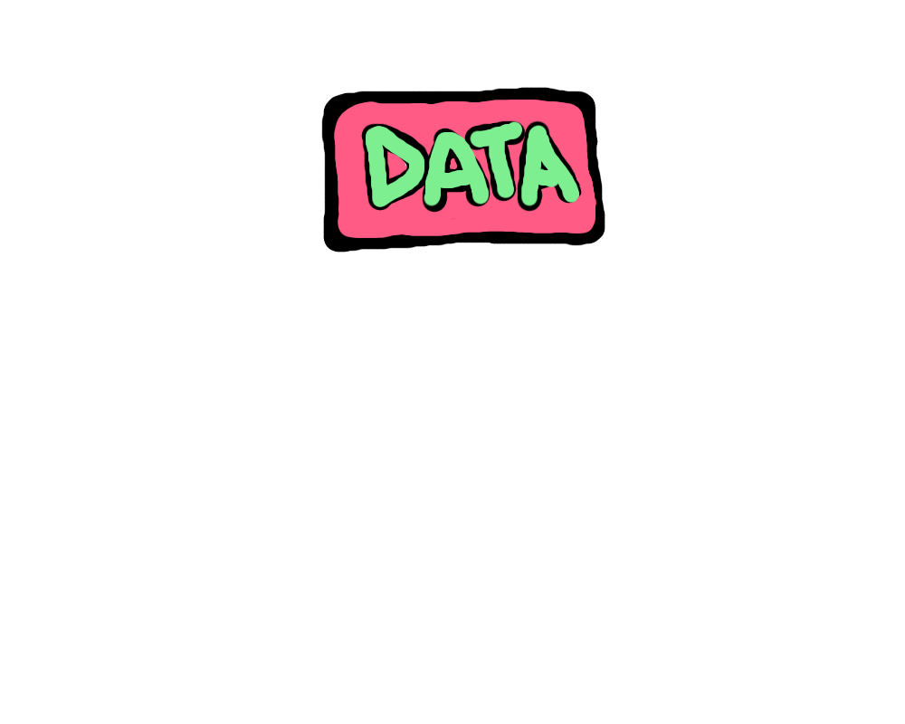
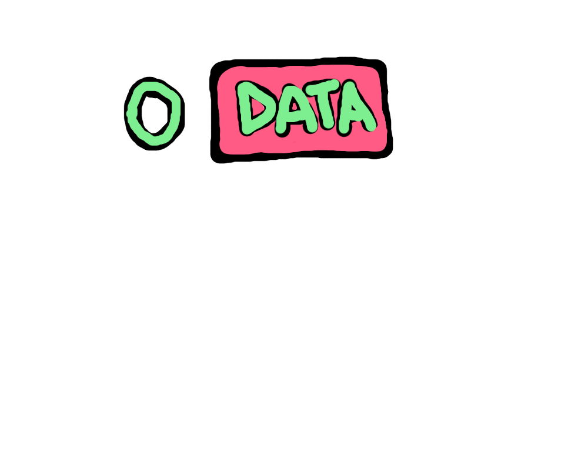
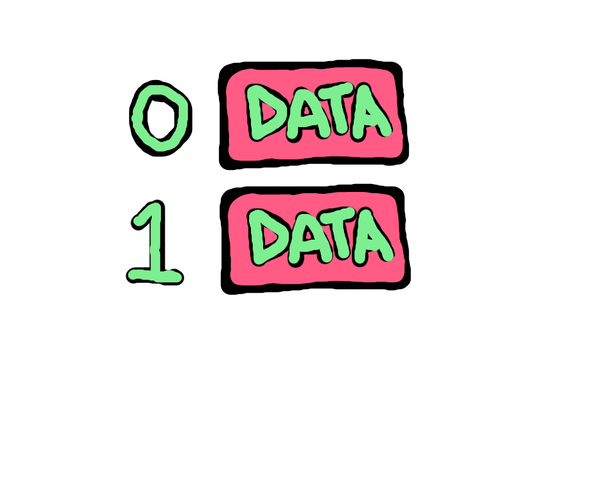
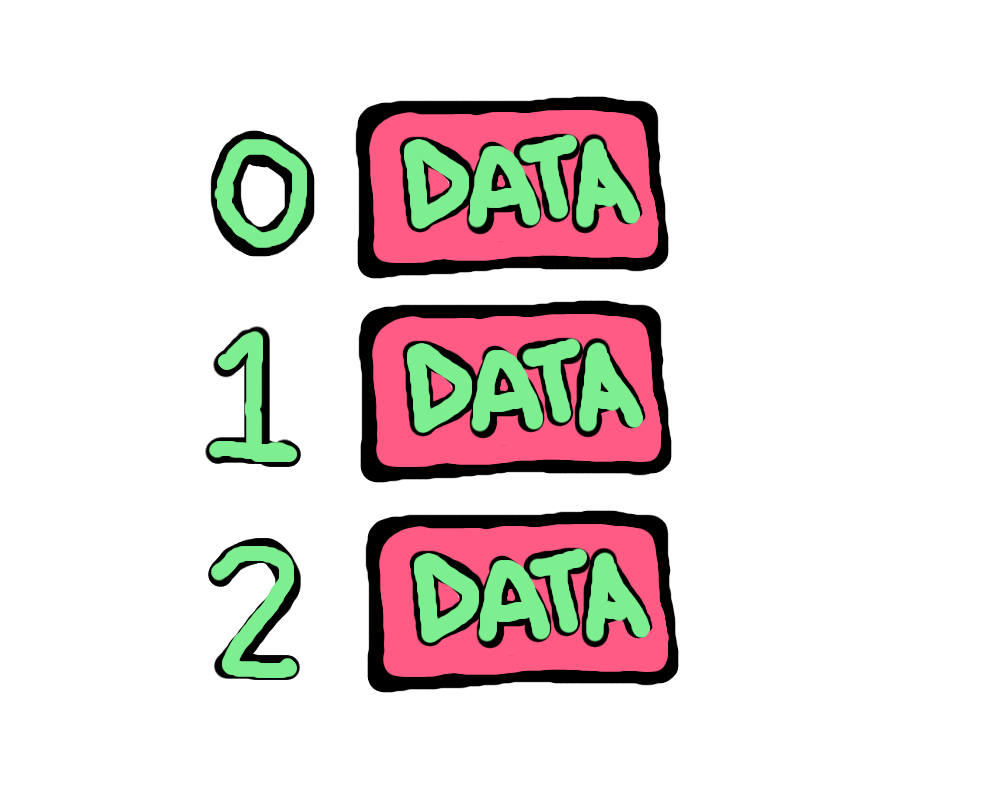
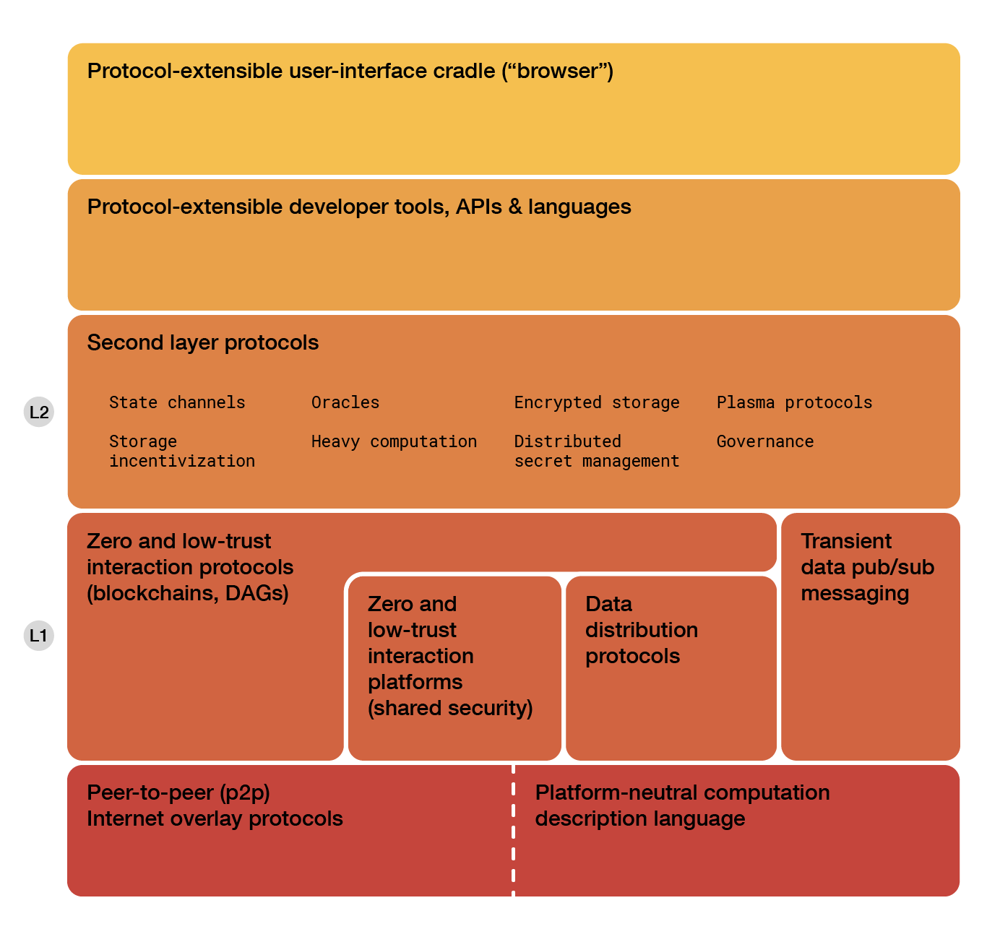

Web of Peers
@jiangplus
Void & Dat Project
Kubernetes
The Internet is a global system of interconnected computer networks
And nodes are connected to exchange state and share data
How do we access data?
Location Addressing
https://en.wikipedia.org/wiki/Content-addressable_storage
Tell you where to get the content
Whoever controls that location controls the content
Content Addressing
magnet:?xt=urn:btih:9f9165d9a281a9b8e782cd5176bbcc8256f
&dn=ubuntu-16.04.1-desktop.iso
Tell you what the content is like
Integrity
Cachable
Location and source independent
Client-Server Architecture
Peer-to-Peer Architecture
Decentralization
Closer
Faster
Redundancy
More peers, more capacity
How can we find the node having that data?
Distributed Hash Table!
dht["9f9165d9a281a9b8e782cd5176bbcc8256f"] = [
"192.168.1.100",
"222.222.222.222",
...
]
Every node keep some info about nearest peers
Open, Permissionless, Resilent, Scalable
High latency
How to connect other nodes?
HTTP
WebSocket
uTP
QUIC
WebRTC
libp2p
Slice the file into chunks
Parallel download
Verify every chunk
MerkleTree

IPFS
How to publish new data?

Data could be updated
We need to model state changes over time
Append-only Log



dat
+ ---------------------------+
Dat ~= | Dat cli, dat-js, etc |
+ ----------+----------------+
| Other | Hyperdrive |
+ ----------+----------------+
| Discovery | Hypercore |
+ ----------+----------------+
file system?
Hyperdrive
chatting?
Cabal
p2p connection in the browser?
Webtorrent
Browser for P2P Applications?
Beaker Browser
incentive?
Filecoin
share files : IPFS
public names : IPNS
feed : hypercore(dat)
database/dropbox : hyperdrive(dat)
public ledger : blockchain!
Hard poblems:
1. Connecting any two nodes in the world
2. Find and distribute data effectively
3. Share data fast and securely
Web 1.0 : Readable
Web 2.0 : Writable
Web 3.0 : Connect and Share, Verify and Trust

Web3 is Revolution
Web3 is Hype
Web3 is Punk
Web3 is Hope
Demo
Thanks!